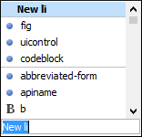
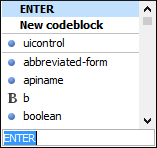
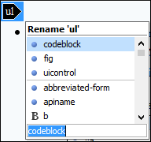
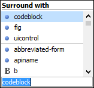

Content Completion Assistant in Author Mode
One of the most useful features in Author mode is the Content Completion Assistant. It offers a list of elements, attributes, attribute values, and other options that are valid in the current editing context.
The Content Completion Assistant is enabled by default. To disable it, open the Preferences dialog box , go to , and deselect the Enable content completion option.
Using the Content Completion Assistant in Author Mode
- Enter
- Ctrl + Space (Command + Space on OS X)
- Alt + ForwardSlash (Command + Alt + ForwardSlash on OS X)
You can navigate through the list of proposals by using the Up and Down keys on your keyboard. In same cases, the Content Completion Assistant displays a documentation window with information about the particular proposal and some of them have links to additional information (for example, DITA elements might have a link to the DITA Style Guide). You can use Tab and Shift + Tab to navigate to those links and Space to trigger them. You can also change the size of the documentation window by dragging its top, right, and bottom borders.
To insert the selected proposal in Author mode, simply press Enter.
Types of Proposals Listed in the Content Completion Assistant
The Content Completion Assistant offers the following types of proposed actions depending on the current context:
- Insert allowed elements for the current context schema and the list of proposals contains elements depending on the elements inserted both before and after the cursor position.
- Insert element values if such values are specified in the schema for the current context.
- Insert new undeclared elements by entering their name in the text field.
- Insert CDATA sections, comments, processing instructions.
- Insert code templates.
- If invoked
on a selection that only contains an element start or end tag (remember that you can see all
element tags while working in
 Full Tags
mode), it will allow you to rename the element.
Full Tags
mode), it will allow you to rename the element. - If invoked on a selection of multiple elements or other content, it will allow you to surround the content with certain tags.
- If invoked on an empty list item that is the last element of the list, it will allow you to convert the list item to a paragraph.
- If the Show all possible elements in the content completion list
option from the Schema-Aware preferences page is selected,
the content completion pop-up window will present all the elements defined by the schema.
When choosing an element from this section, the insertion will be performed using the
schema-aware smart editing features.Note: By default, you are not allowed to insert element names that are not defined by the schema. This can be changed by deselecting the Allow only insertion of valid elements and attributes check box from the Schema-Aware preferences page.
Examples of How the Content Completion Assistant Works
-
If the cursor is positioned at the beginning or at the end of the element, the first item offered in the Content Completion Assistant is a New <Element> item. Selecting this item will insert an empty element.
Figure 2. Example (New [Element Name])  -
If the cursor is positioned somewhere inside the element, the first entry in the Content Completion Assistant is a Split <Element> item. In most cases, you can only split the closest block element to the cursor position, but if it is inside a list item, the list item will also be proposed for split. Selecting Split <Element> splits the content of the specified element around the cursor position.
Figure 3. Example (Split [Element Name]) 
-
If the cursor is positioned inside a space-preserved element (for example, a codeblock), the first choice in the Content Completion Assistant is Enter, which will insert a new line in the content of the element, followed by New <Element>.
Figure 4. Example ('ENTER' New Line)  -
If invoked on a selection that only contains an element start or end tag (remember that you can see all element tags while working in
Full Tags
mode), it will allow you to rename the element.Figure 5. Example (Rename)  -
If invoked on a selection of multiple elements or other content, it will allow you to surround the content with certain tags.
Figure 6. Example (Surround) 